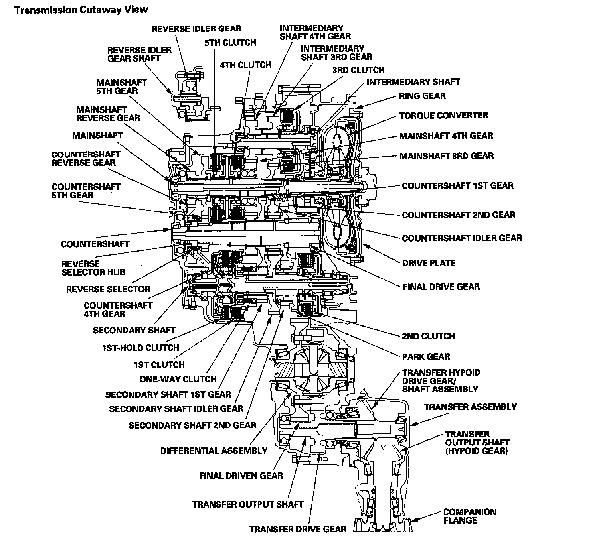

Clutches and Gears
Clutches and GearsThe 5-speed automatic transmission uses hydraulically-actuated clutches to engage or disengage the transmission gears. When hydraulic pressure is introduced into the clutch drum, the clutch piston moves. This presses the friction discs and steel plates together, locking them so they don't slip. Power is then transmitted through the engaged clutch pack to its hub-mounted gear. Likewise, when the hydraulic pressure is bled from the clutch pack, the piston releases the friction discs and the steel plates, and they are free to slide past each other. This allows the gear to spin independently on its shaft, transmitting no power.

1st Clutch
The 1st clutch engages/disengages 1st gear, and is located at the left end of the secondary shaft. The 1st clutch is supplied hydraulic pressure by its ATF feed pipe within the secondary shaft.
1st-hold Clutch
The 1st-hold clutch engages/disengages 1st-hold in 1st gear in the M position. The 1st-hold clutch is located in the 1st clutch drum, and is supplied hydraulic pressure by its ATF feed pipe within the secondary shaft.
2nd Clutch
The 2nd clutch engages/disengages 2nd gear, and is located at the right end of the secondary shaft. The 2nd clutch is supplied hydraulic pressure through the secondary shaft by a circuit connected to the internal hydraulic circuit.
3rd Clutch
The 3rd clutch engages/disengages 3rd gear, and is located at the end of the intermediary shaft. The 3rd clutch is supplied hydraulic pressure through the intermediary shaft by a circuit connected to the internal hydraulic circuit.
4th Clutch
The 4th clutch engages/disengages 4th gear, and is located at the middle of the mainshaft. The 4th clutch is joined back-to-back to the 5th clutch. The 4th clutch is supplied hydraulic pressure through the mainshaft by a circuit connected to the internal hydraulic circuit.
5th Clutch
The 5th clutch engages/disengages 5th gear, as well as reverse gear, and is located at the middle of the mainshaft. The 5th clutch is joined back-to-back to the 4th clutch. The 5th clutch is supplied hydraulic pressure through the mainshaft by a circuit connected to the internal hydraulic circuit.
One-way Clutch
The one-way clutch is positioned between the 1st clutch hub and the secondary shaft 1st gear. The secondary shaft 1st gear is splined to the 1st-hold clutch hub, with the 1st-hold clutch hub splined to the secondary shaft. The secondary shaft 1st gear provides the outer race surface, and the 1st clutch hub provides the inner race surface. The one-way clutch locks when power is transmitted from the secondary shaft 1st gear to the countershaft 1st gear. The 1st clutch and gears remain engaged in the 1st, 2nd, 3rd, 4th, and 5th gear ranges in the D position, and in the 1st, 2nd, and 3rd gear ranges in the D3.
However, the one-way clutch disengages when the 2nd, 3rd, 4th, or 5th clutches and gears are applied in the D or D3 position. This is because the increased rotational speed of the gears on the secondary shaft causes the one-way clutch to free-wheel with the 1st clutch still engaged.
Gear operation
Gears on the mainshaft:
^ 4th gear is engages/disengaged with the mainshaft by the 4th clutch.
^ 5th gear is engaged/disengages with the mainshaft by the 5th clutch.
^ Reverse gear is engaged/disengaged with the mainshaft by the 5th clutch.
^ 3rd gear is splined with the mainshaft and rotates with the mainshaft.
Gears on the countershaft:
^ Final gear is integral with the countershaft.
^ 1st gear, 2nd gear, and 4th gear are splined with the countershaft, and rotate with the countershaft.
^ 5th gear and reverse gear rotate freely from the countershaft. The reverse selector engages 5th gear and reverse gear with the reverse selector hub. The reverse selector hub is splined to the countershaft so 5th gear and reverse gear engage with the countershaft.
^ Idler gear is located over the 2nd gear, and rotates freely from the countershaft.
Gears on the secondary shaft:
^ 1st gear is engaged with the secondary shaft by the 1st clutch and the one-way clutch when accelerating, and 1st gear is disengaged from the 1st clutch at the one-way clutch when decelerating. 1st gear is engaged with the secondary shaft by the 1st-hold clutch when decelerating for engine braking.
^ 2nd gear is engaged/disengaged with the secondary shaft by the 2nd clutch.
^ Idler gear is splined with the secondary shaft, and rotates with the secondary shaft.
^ Park gear is integral with the 2nd gear.
Gears on the intermediary shaft:
^ 3rd gear is engaged/disengaged with the intermediary shaft by the 3rd clutch.
^ 4th gear is splined with the intermediary shaft.